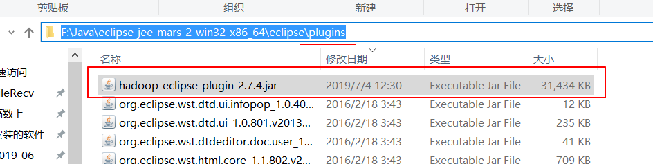
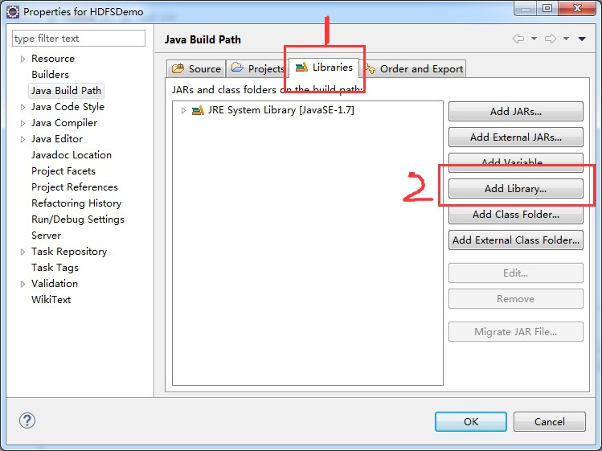

一、eclipse中的hadoop开发环境的搭建：
1、将eclipse的hadoop插件放到eclipse的安装目录下的plungins中。（该插件被称为eclipse的HDFS可视化插件）
插件名为：hadoop-eclipse-plugin-2.7.4.jar（这种插件好像只能从GitHub或者CSDN下载）

放入该插件的效果是：重启eclipse后在Java EE视图中会有一个DFS Locations的文件夹。（在Java视图里没有）

2、连接在linux系统中配置好的hadoop集群，利用可视化插件去查看HDFS集群的目录树结构
放入插件并启动eclipse后，在eclipse的导航栏点击 Window —> show view —> other ，在列表中找到图中这个东西：

双击，在右下方会出现这么一个显示框，如下图

点击上图中红框中的这个东西，会出现如下图相应的这么一个对话框，修改相应的信息

配置完成，下方会有以你起的本地名称（Location name）为名的记录

配置成功后，再点击DFS Locations 就可以看见HDFS的目录树结构了

3、在当前的windows系统中安装hadoop-2.7.4
（1）在windows系统中的选取一个目录，解压一个hadoop安装包放入到该目录（不要有空格和中文字符）
可以就选用安装在linux系统中的那个基于linux系统编译过的hadoop安装包，只不过要添加几个配置文件而已

（2）配置环境变量
HADOOP_HOME
Path
将Hadoop的安装路径作为HADOOP_HOME环境变量的值。（记住，路径一定要到有bin、lib、sbin这些配置文件的这一层才行，不能直接就写成 F:\hadoop\hadoop-2.7.4-with-centos-67 ，这样配环境变量是不对的，因为会导致接下来的Path中的环境变量路径错误。）

单击“计算机-属性-高级系统设置”，单击“环境变量”，到达配置环境处。
在系统变量处点击新建，新建HADOOP_HAME

选中Path变量点击编辑，再点击新建，在末尾加上两行
%HADOOP_HOME%\bin
%HADOOP_HOME%\sbin

4、放入hadoop在windows系统运行的本地依赖库
（如果在windows系统安装的Hadoop安装包是基于 windows系统编译的hadoop安装包，那么可以忽略该操作）
（1）将“hadoop-2.7.4的hadoop.dll和winutils.exe.zip”文件解压出来，将解压后的文件夹中的bin目录下的winutils.exe 复制一份，放在windows系统中hadoop的安装目录的\bin文件夹下


（2）将“hadoop-2.7.4的hadoop.dll和winutils.exe.zip”文件中的bin目录下的hadoop.dll 复制一份，放在windows系统中 c:\Windows\System32\ 文件夹下


5、给eclipse进行配置，告诉eclipse，Windows系统中的hadoop在哪。
打开eclipse，点击导航栏Window --> Preferences --> Hadoop Map/Reduce

二、hdfs的开发环境搭建：
1、 按键 ctrl + N 搜索 java project 建立普通 java 工程，如图所示：

输入项目名字后，点击确定，生成一个普通 java 工程


注意：建议大家使用jdk的版本和linux服务上的jdk版本一致。在这儿我选择的都是jdk1.8 的大版本
2、 加入依赖 jar，有两种方式
方法一：先在项目中建立一个文件夹 lib，然后添加 hadoop 安装包下 share/hadoop/common 和 share/hadoop/hdfs 下的 jar 和它所依赖的 lib 目录下的 jar 包，直接将他们全部复制粘贴到lib文件夹里，然后把加入的所有的 jar 包都 add classpath（这种方法的优点是可移植性好，但缺点是会造成项目占用储存空间很大，因为所有的jar包全都放在了项目里）
方法二：添加自己的本地依赖库（这种方法的优点是对自己而言很方便，相当于直接建立一个本地的访问链接，要访问这些jar包的时候直接通过链接路径到本地去调用，缺点是移植性不好，因为每个人的hadoop安装目录不一样）
我们采用第二种方式，具体操作请按图所示操作进行：
先添加hdfs的jar包：
在项目名称（hdfs_demo）上鼠标右键选择 Build Path ,然后点击右边出现的 Configure Build Path, 出现：



添加完hdfs的jar包后，不要直接退出，再从第6步开始添加一个common的jar包（因为hdfs、MapReduce、yarn的底层都依赖于common模块）。对应的名字和jar包目录如下两图：


同理，如果还要再添加mapreduce和yarn的本地依赖库，步骤也和上面的添加common和hdfs的本地依赖库一样一样，就是在hadoop的安装目录的\share目录下找到相应的mapreduce或yarn的目录名，点进去后先把当前目录外面的这些jar包都添加到本地依赖库里，然后再把子目录lib里的所有jar包都添加到本地依赖库里即可
都添加好了，点击 OK ，再点击 Finish，再点击 OK，项目会变成这样：

到此表示，我们利用 HDFS 的 api 编写业务代码所依赖的 jar 包都添加完成
————————————————————手写与上传资料分割线—————————————————